1.
balcony: Juliet is standing on the balcony, looking down at Romeo.

2.
brick: The third pig's house is very steady because it was built with bricks.
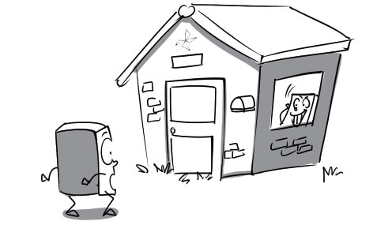
3.
building: Bitexco is the tallest building in Ho Chi Minh city.
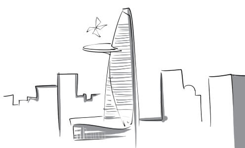
4.
ceiling: There is a giant spider on the ceiling.
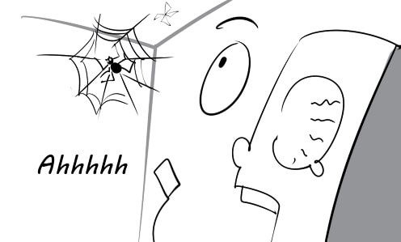
5.
concrete: Peter broke his hand when he tried to chop a concrete block in half.

6.
construction: My house is currently under construction.
7.
cottage: My grandfather lives in a small cottage in the countryside.
8.
design: The architect is working on the design for the new house.
9.
elevator: We took the elevator to go to the tenth floor.
10.
engineering: Golden Gate bridge is one of the greatest achievements of modern engineering.
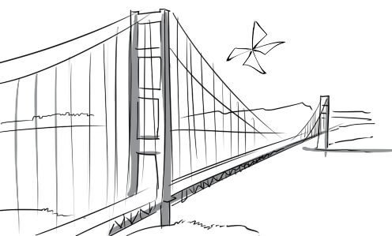
11.
flooring: Wood flooring makes the living room look very classic.

12.
frame: This luxurious bed frame is made of oak.
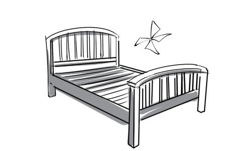
13.
housing: Thanks to the new policy, the poor can get affordable housing now.

14.
innovation: Blueup considers product design and innovation as our top priority.
15.
invention: The scientist's inventions are very bizarre and useless.

16.
landmark: Ben Thanh market is the most famous landmark of Ho Chi Minh city.

17.
lift shaft: The electrician climbed down the lift shaft to fix the problem.

18.
occupant: I was the occupant of this house when I was a kid.

19.
platform: The famous singer is performing a beautiful ballad on the platform.

20.
quarry: You must wear a safety helmet when you visit a quarry.

21.
residence: This amazing house is the residence of my company's president.
22.
skyscraper: Spiderman is flying from one skyscraper to another.
23.
staircase: The actress is walking down the staircase and waving at her fans.

24.
steel: Stainless steel wires are packed into coils.
25.
storage: This metal box will give us more storage space.

26.
structure: Our new headquarters is a steel and glass structure which has 20 storeys.
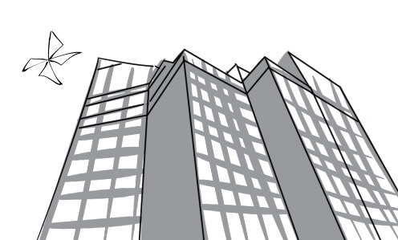
27.
tension: The tennis player is adjusting the string tension of his racket.
28.
timber: There is a large pile of timber at the construction site.

29.
airy: His new office is very light and airy, which makes him very happy.

30.
conventional: They use conventional method to build this house.
31.
cosy: The fireplace makes the living room look very cosy.

32.
cramped: My brothers and I live together in a very cramped room.

33.
curved: I like to walk along the curved path around the lake every evening.
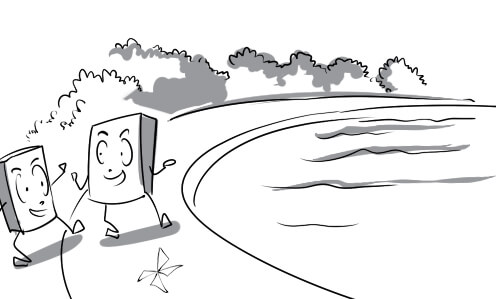
34.
domestic: Being the eldest child, I help my parents with the domestic chores.

35.
exterior: My father is installing the exterior lights of the house.

36.
functional: My bathroom is quite small but very functional.
37.
futuristic: I really like the futuristic design of this car.
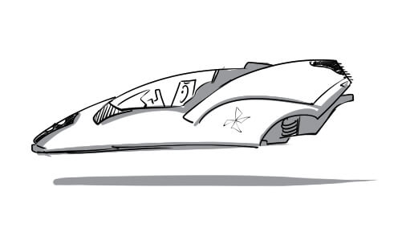
38.
high-rise: I have to raise my head to look at the high-rise building.

39.
internal: Jeremy is painting the internal walls of his house.
40.
mass-produced: Our products are mass-produced in this factory.

41.
modern: My office is well equipped with modern technologies.

42.
old-fashioned: Everyone is laughing at her because she is wearing an old-fashioned dress.
43.
ornate: My best friend gave me an ornate picture frame for my birthday.
44.
prefabricated: I want to buy a prefabricated house because construction will take a lot of time.

45.
single-storey: My family is living in a humble single-storey house in the suburb.
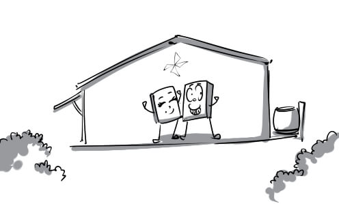
46.
spacious: The deluxe coaches are more spacious and convenient than normal ones.

47.
state-of-the-art: This state-of-the-art computer costs me nearly 5,000 dollars.

48.
typical: My sister looks like the typical Vietnamese woman with her ao dai and her long hair.

49.
ultra-modern: The maximum speed of this ultra-modern car is 500 kilometres per hour.
50.
unique: His design is very unique. I've never seen anything like this before.

51.
activate: The fumes from the kitchen activated the fire alarm.

52.
automate: The manufacturing process of this factory has been automated.

53.
condemn: David is condemned for his ignoble act.

54.
decorate: They are decorating their house with a lot of tinsel for Christmas party.

55.
demolish: They decided to demolish their house because it was too old.
56.
plywood: This table cannot bear much weight because it is made of plywood.
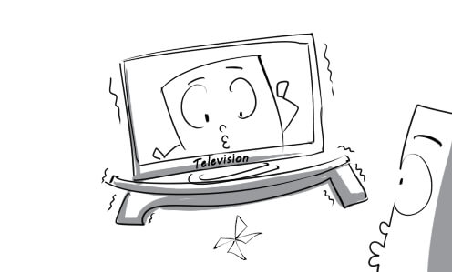
57.
haul: The horse is hauling a very heavy wagon.
58.
hoist: They are trying to hoist the car out of the river.
59.
imbue: Mr Lee's living room is imbued with Chinese mood.
60.
maintain: My father has a mechanic maintain his car because it hasn't worked so well lately.
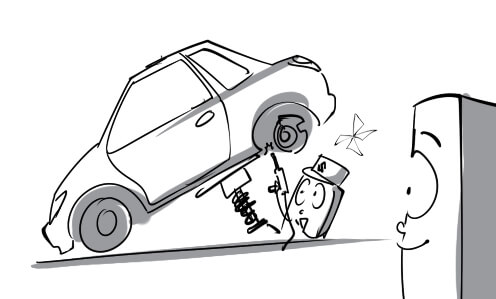
61.
reconstruction: The reconstruction of the house began just one week after it was hit by the hurricane.
62.
renovate: Peter is renovating his old car so that he can sell it at a good price.

63.
support: The entrance is supported by two marble pillars.

64.
furnish: Mary furnished her bedroom with some expensive furniture.
65.
access: Only the editor had access to these celebrities' personal information.

66.
author: The famous author had a book signing at the local bookstore yesterday.
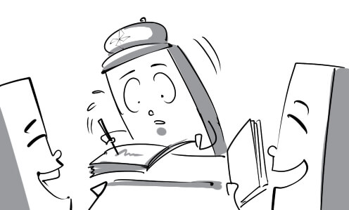
67.
bias: This magazine has a bias towards this actress. They always write good things about her.
68.
censorship: The censorship board decided to ban this movie because it is too violent.
69.
current affairs: My father always watches current affairs on CNN at 7 o'clock everyday.

70.
editor: The editor of The New York Times is the position that every journalist dreams about.
71.
exposé: There is an exposé of the car accident on the newspaper today.
72.
exposure: The exposure of the actor's scandal made him very ashamed.

73.
fame: The actor is always recognized by everybody because of his fame.
74.
free press: Reporters can write about anything they like thanks to their free press.

75.
ideology: You cannot argue with someone whose ideology is totally different from yours.

76.
investigation: The reporter is conducting an investigation into the political scandal.

77.
issue: The August issue of Mode has many interesting articles.
78.
journal: Tuoi Tre is one of the most popular journals in Vietnam.

79.
journalism: My father has been working in journalism for almost 20 years.

80.
mass media: The president's speech has received heavy coverage in the mass media.

81.
network: This social network allows users to share information with each other very easily.

82.
news: I am reading the latest news about the royal wedding on the newspaper.

83.
newsstand: I stopped at a newsstand to buy my favourite magazine.
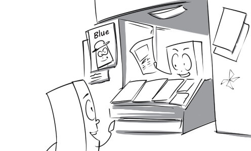
84.
opinion: The famous critic's opinion on the new cartoon is very positive.

85.
paparazzi: There were a lot of paparazzi following the actress when she walked down the street.
86.
press: Hot issues have been widely reported in the press.

87.
privacy: The famous actress travelled to a remote island to look for some privacy.

88.
publication: Flashcard blueup for 12th grade will be ready for publication next month.
89.
publicity: There has been an exciting publicity campaign for the new movie.

90.
relevance: His question has no relevance to the topic.

91.
safeguard: I use this software as a safeguard against virus.

92.
speculation: There is widespread speculation that Angelina and Brad will break up soon.
93.
artificial: The young girl cried artificial tears when her old husband died.